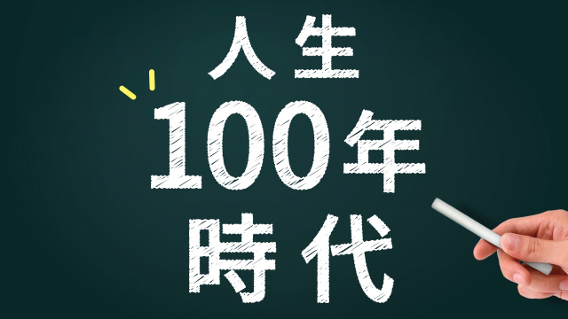

日本が長寿国と言われて久しい。
確かに私の母を始め、知人や旧友の親など90過ぎても元気という人が珍しくない。平均寿命はドンドン伸びているようです。
人口統計の専門家はこのまま行くと今の子どもたち―若者たち―の平均寿命は確実に100歳を超えるだろうと予測しています。
人生100年時代はすぐそこまで来ているということです。あなたのお子さんは高い確率で100歳まで生きるとしたら、どう感じますか？
かつて―戦前まで―は「人生50年」と言われたものでした。私が高校生だった1970年代でも男性の平均寿命は60代(女性は70代前半)でした。これは定年退職(当時は55歳くらい)したら程なく多くの人は亡くなっていたことを意味します。
この時期、第2の人生と言う言葉は大きな意味をもたず定年後は死を待つつかの間の「老後」だったわけです。
しかし100年以上生きるとなったら、のんびり老後という概念さえなくなるでしょう。考えてもみて下さい。50歳になってもまだ人生の半分しか生きてないのですよ。
仕事を例にとると、大学を出て働き続ける年数―いわゆる生産に従事する期間―は現在なら40年前後ですが、仮に90歳まで働くとこれが70年近くに延びる計算になるのです。
「そんなギリギリまで働きたくない」と言っても元気でいるうちは、人間誰しも何らかの活動をしなくてはなりません。充実した人生を実感したいからです。
こうなるとまさに第2の人生と言う言葉はとても大きな意味をもって私たちの前に立ちはだかってきます。
人生100年時代とは、まさにこの人生の後半部―第2の人生―をいかに有意義に充実させるかにかかっている。すなわち幸せな人生であるかどうかは、最後に自分にとって満足のいくものであったかにかかっているからです。
50歳を１つの分岐点と考えると、その前は学校を出て就職し家庭を持ち子育てをする、つまりキャリアを積み社会参加をし、諸々の義務を果たす時期といえます。これが第1の人生です。
そして子育てや会社などの組織のしがらみから解放される頃第2の人生がスタートします。
ところが現在の社会システムはこのような第2の人生をいかに生きるべきかを考えるようには設計されていません。
相変わらず定年まで働いたら後は「老後」という概念なのです。だからせいぜい老後の小遣い稼ぎにバイトでもしながら、それでも健康でありたいからスポーツジムに通う。あるいは老人仲間とヒマつぶしに昼からカラオケに行く。もしくは趣味に没頭するでしょうか。これらが悪いと言ってるのではありません。
ただ、第2の人生を余生という老後で過ごすことは本人にとっても社会にとっても大きな損失でありもったいないということです。
今後は人生の第2期が30年以上にも渡ることを考えると、その人生経験で培ったキャリア、技能知識もっと言うなら「人生の智恵」を社会や後に続く世代の人たちに還元していくことが望ましいのです。
実はこの考えは古くからあるのです。
古代インドのヒンズー教にある人生を四季になぞらえる考え方もそう。
そこでは、学生期（学びの期間）家住期（家庭をもち職につき子育てをする）林住期（社会的な義務から解放され人里から離れる）遊行期（世俗の執着を捨て永遠の自己と同一化する）など人生を4つの段階（ステージ）に分けています。
最初の２つ(学生期と家住期)は、学ぶこと働くこと家庭をつくり子育てをする時期で私のいう第1の人生ですね。ここでは世俗的な価値観が重視されます。次の２つ（林住期、遊行期）は、一見すると世捨て人のようですが要するに世俗的な執着を離れて自らを見つめ直すことで真に智恵ある人になることです。
エリクソンのライフサイクル論やユングの発達理論でも同様な見解が述べられています。
これを私流に読み解くと、人生後半は成熟した人格を磨き上げる時期であり、そのことによって他世代や社会に貢献する時であるということ。それが本人にとっても充実と幸福の実感を約束するということです。
子育てや会社の利益のために働くという縛りがないからこそ、1個の人間として自由に自己を磨き自分の才能や智恵を発揮して社会貢献を果たすことができる。そこに幸せを感じるという人生です。
ジョナサン・ラウシュという人が書いた「ハピネスカーブ」という本があります。これは世界中の人にインタビューやアンケートをとって、人生の幸福度(ハピネス)を統計的に計測したものです。
それによると多くの人は40代～50代で幸福度が下がり、50代以降から再び上がり出すと言うのです。40代～50代では、たとえ世間的に成功していると思われるような人でも「自分の人生はこのままでいいのか」「なぜか虚しい」などと感じる傾向があり、幸福度は落ちるのですが50代以降～60代からは上昇に転じるのだそうです。
これはとても面白い現象だと思います。
人はなぜ40代～50代で幸福感が下がるのか。そしてなぜ老年期に幸福感が強まるのか。
中年期にいったん幸福感が下がるのは、私の考えでは「第2の人生に備えよ」という天の声、いわば魂からの呼びかけだといえます。20～30代は「自分の輝かしい未来」を信じることができ希望に満ちていました。
でも40代も後半になると、人生はくり返しのパターンに感じたとえ仕事などが順調でも自分が成長しているという実感はなくなると言うことです。私も経験しました。
つまり転機が訪れるのです。前進せよ、あるいは方向転換しろというサインです。
なので人はこの魂の呼びかけ（コーリング）に従うことで第2の人生が開けるのです。
この本の中でも、それまでのキャリアを投げうって全く別の仕事やボランティアを始める人やアメリカからインドに移住し、本当にやりたかったことを始める人の例が載っていました。
これほど劇的ではなくても、それまで気になっていた分野の勉強を始めたり、仕事の量を減らしてライフスタイルを見直す人が出てきます。
彼らに共通するのは、自分が本当にやりたいことは何なのか、心の底から望むことは何かについて真剣に取り組んだ点です。
そこから充実した第2の人生が始まった。
人としての成熟と幸福の人生が始まったということです。
さてそれなら第2の人生を活かすにはどうすれば良いのかというなら、私は次の点を挙げたいと思います。
◦まず人生は昔よりも長くなっている。すなわち「第2の人生」があるということを自覚して生きること。
◦具体的には第1の人生を過ごしながら、そこで学んだ事柄を次の人生で活かすようにする。キャリア、技能、知識、人間関係すべては次のステップへの用意された宝物と考える。
◦自分の特性―もって生まれた才能の性質―を自覚し、それをうまく活かせないかと常に考える。
◦前半は子育てや社会に適合することに使っていたエネルギーを後半では、若い世代や社会全体のために使うことを自覚して生きる。
これらの心がまえを30代後半から努めて意識して、次へ備える姿勢でいたい。
今の社会システムは世俗的な成功を目指す、つまり個人的利益の追求で一生が終わる前提です。これは先のヒンズーの例でいえば「家住期」どまりの人生です。
だから多くの人は良い学校→安定した企業→安心な老後という、高度成長期時代のライフスタイルしか思いつかず、その先を考えていないのです。これはせいぜい寿命が70代時代の価値観です。もし、あなたが子をもつ親ならぜひ第2の人生を充実させることを子どもに教えて欲しい。そしてあなた自身もそのように実践してみてはいかがでしょうか。
人生の幸福は「第2の人生」をいかに生きるかで決まる。これは決して学校で教わることではないのですから。